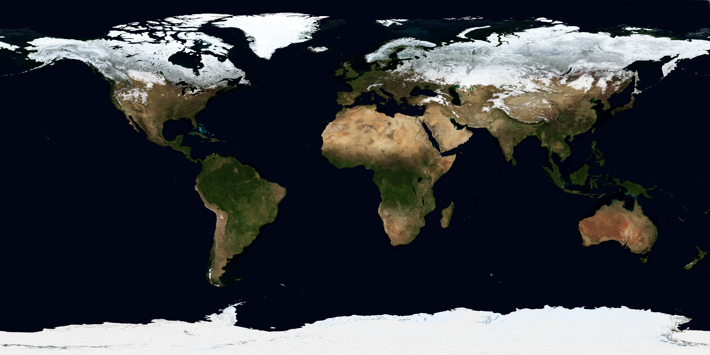
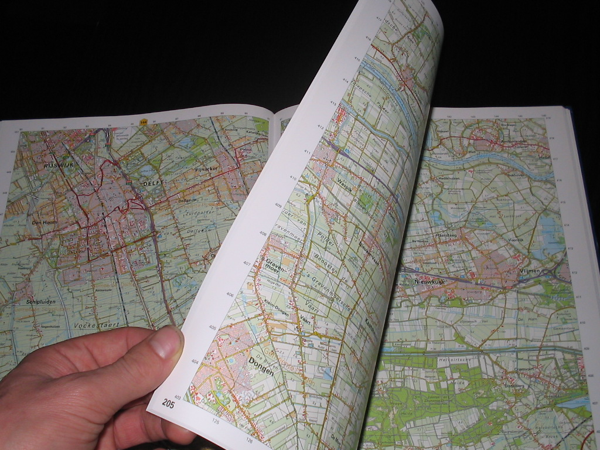

1. Що Ви насправді бачите?



2. Геолабораторія: одна територія у трьох шарах
У центрі — острів Хортиця та Запоріжжя. Перемикайте шари. Масштаб і центр залишаються однаковими, змінюється лише спосіб подання.
У якому шарі найкраще видно назви вулиць і доріг?
У якому шарі найкраще оцінити реальний вигляд рослинності та забудови?
У якому шарі найкраще побачити рельєф?
3. План місцевості: коли деталей більше, ніж території
План показує невелику ділянку зверху, дуже детально. Він не намагається показати всю область чи материк. Тут важливі точні взаємні положення об’єктів.
4. Практична робота: порівняйте способи зображення
Продукт роботи: таблиця доказів + висновок. Не пишіть «краще/гірше» без критерію.
| Спосіб | Що видно найкраще? | Що втрачається / узагальнюється? | Коли оберу? |
|---|---|---|---|
| Космічний знімок | |||
| Глобус | |||
| Географічна карта | |||
| План місцевості |
5. Виберіть інструмент під задачу
6. Теорія після дослідження
Космічний знімок
Зображення, отримане сенсорами супутника. Дає фактичний вигляд і спектральні дані поверхні на момент зйомки, але не пояснює їх сам по собі.
Глобус
Об’ємна модель Землі. Найкраще зберігає взаємне положення й форму великих об’єктів, але має малий масштаб і мало деталей.
Географічна карта
Зменшене й узагальнене зображення поверхні на площині в певній проєкції. Використовує масштаб, умовні знаки та відбір інформації.
План місцевості
Великомасштабне детальне зображення невеликої ділянки зверху. Зручне для орієнтування та роботи з конкретними об’єктами.
7. Коротке відео NASA: як супутники бачать Землю
Під час перегляду випишіть два види інформації, які можна отримати із супутника, але складно зібрати одночасно наземними спостереженнями.
8. CER — підсумок практичної роботи
Твердження: «Для вивчення території недостатньо одного виду зображення земної поверхні».
9. Домашнє завдання
§7 підручника Запотоцького та ін., стор. 29 і далі. Відкрийте електронний підручник.
- Оберіть одну знайому ділянку місцевості.
- Знайдіть її на звичайній онлайн-карті та на супутниковому шарі.
- Запишіть по 3 деталі, які краще видно на кожному зображенні.
- Сформулюйте висновок у 2–3 реченнях: яке джерело було кориснішим саме для Вашої мети і чому.
10. Домашній тест — 10 балів
Спочатку введіть дані учня/учениці. Після цього відкриються 10 запитань, по 1 балу.